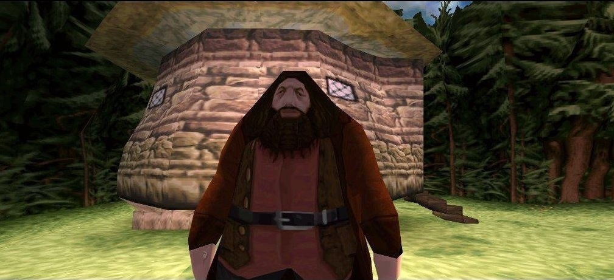

Большая модалка. Больше текста. Больше всего.
Глава 1. Мальчик, который выжил
Мистер и миссис Дурсль проживали в доме номер четыре по Тисовой улице и всегда с гордостью заявляли, что они, слава богу, абсолютно нормальные люди. Уж от кого-кого, а от них никак нельзя было ожидать, чтобы они попали в какую-нибудь странную или загадочную ситуацию. Мистер и миссис Дурсль весьма неодобрительно относились к любым странностям, загадкам и прочей ерунде.
Мистер Дурсль возглавлял фирму под названием «Граннингс», которая специализировалась на производстве дрелей. Это был полный мужчина с очень пышными усами и очень короткой шеей. Что же касается миссис Дурсль, она была тощей блондинкой с шеей почти вдвое длиннее, чем положено при ее росте. Однако этот недостаток пришелся ей весьма кстати, поскольку большую часть времени миссис Дурсль следила за соседями и подслушивала их разговоры. А с такой шеей, как у нее, было очень удобно заглядывать за чужие заборы. У мистера и миссис Дурсль был маленький сын по имени Дадли, и, по их мнению, он был самым чудесным ребенком на свете.
Действующие лица
- Вернон Дурсль — муж родной тётки Гарри Поттера с материнской стороны. Магл до мозга костей, человек, совершенно лишённый воображения
- Петуния Дурсль — старшая дочь Мистера и Миссис Эванс, сестра маглорожденной волшебницы Лили Эванс. В отличие от сестры, не обладала волшебными способностями и очень расстраивалась из-за этого
- Дадли Дурсль — двоюродный брат Гарри Поттера, старше его на месяц. На его одиннадцатый День рождения случилось неприятное происшествие с удавом, после которого Гарри Поттера наказали «до наступления летних каникул».